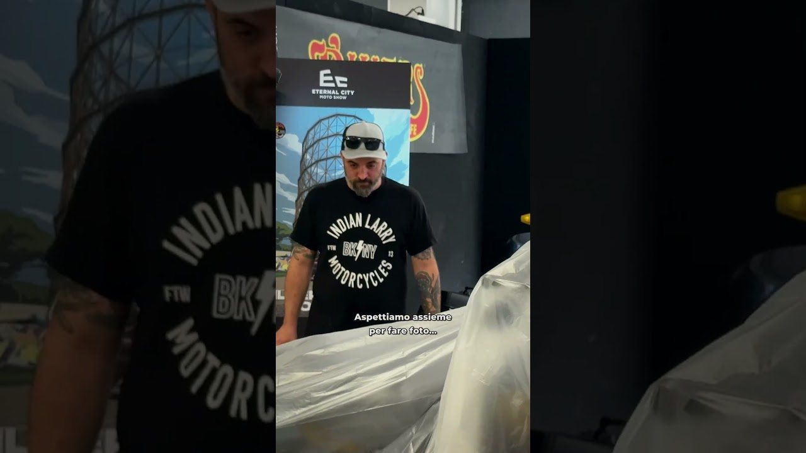

Il Diario · Officina · 28 settembre 2026 · 4 min di lettura
Cos'è una bagger da corsa
Una Harley-Davidson da turismo, con le borse, portata in pista. Sembra una contraddizione ed è diventata una categoria. Al Gazometro il Killer Bagger Contest ne ha messe in fila tre, con preparazioni fino a ottantamila euro.

Il video si guarda qui, ma la visualizzazione conta su YouTube: è lo stesso player del canale. Se ti piace, lascia un commento.
«Bagger» viene da bags, le borse. È il nome che negli Stati Uniti si dà alle grandi Harley-Davidson da turismo con le borse laterali rigide, la carenatura e il parabrezza: moto fatte per macinare chilometri dritti, pesanti, comode. L'idea di portarle in pista, tolto quasi tutto quello che le rende comode, è nata come uno scherzo fra preparatori e oggi è una categoria con un campionato, moto dedicate e un pubblico che riempie le tribune.
Cosa si cambia
Quasi tutto, tranne l'aspetto. Una bagger da corsa mantiene la sagoma, le borse e la carena, perché la regola della categoria è che si riconosca. Sotto, cambiano le sospensioni, i freni, le ruote, l'altezza da terra, l'angolo di sterzo, lo scarico, e il motore viene preparato per girare come non è mai stato pensato per girare. Il peso resta un problema, e per questo la preparazione costa: al Killer Bagger Contest del Gazometro si arriva a ottantamila euro per moto.
Il contest
Ideato da Carlo Stievano con Fabrizio Croce, il Killer Bagger Contest ha messo in fila le bagger di 4Touring, Ironborne Motorcycles e Breska Inc. Kustom, tutte con sospensioni FG Gubellini. Nello short che abbiamo pubblicato oggi ci sono tre teli, un conto alla rovescia e la domanda che ci ha fatto tutto il Village: e sotto il terzo?
Perché ci piacciono
Perché sono l'opposto del configuratore. Una bagger da corsa è una moto che non dovrebbe esistere, costruita da persone che hanno deciso che doveva esistere lo stesso, con le mani. Si vede da vicino: le saldature, le staffe fatte apposta, le borse svuotate e irrigidite. È esattamente il tipo di cosa per cui il canale ha una macro. Il capitolo completo è nello speciale, dal minuto 1:33.